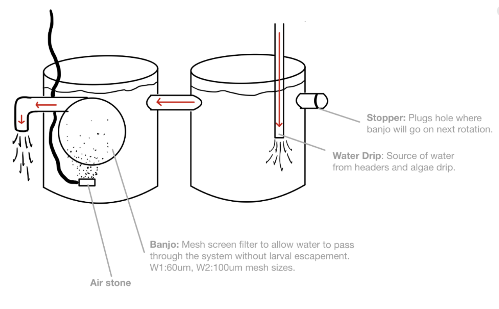
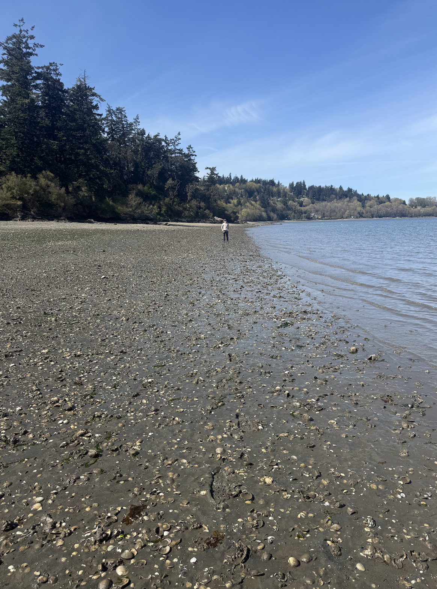

A brief recap on the cockle work so far, since I didn’t post in march:
March 23: Cockle Broodstock Collection
Cockles retrieved from Sequim Bay State Park. 115 of the largest individuals (~100-125 mm) were selected for broodstock.
Broodstock was split into 4 groups (as part of the SeaGrant project investigating rates of selfing depending on broodstock abundance/non-self gamete availability):
A: n = 10
B: n = 15
C: n = 30
D: n = 60
Broodstock were brought to Manchester Research Station (bld 6) and transferred to tanks with flow-through seawater (filtered to 20 um) at 12C.
March 26: Cockle Spawning
I was not present for the cockle spawn but am reporting it here to set the basis for the larval rearing setup
Cockle broodstock spawned naturally (ie., no reproductive conditioning) sometime between the evening of 3/25 and the morning of 3/26. The water in the broodstock tanks was trained through a 48 um mesh sieve to capture larvae. Larvae were transferred (by group) to two-sided larval tanks (see diagram).
There are 8 of these setups: 2 replicates for each of the 4 broodstock groups (16 tanks total)

To limit “clogging” of the banjo screens, an additional 5 um seawater filter in added to the water source for the building. Both the 20 um and the 5 um filters are washed daily with freshwater and fully replaced approximately 1x weekly.
March 31: Cockle Larvae Husbandry
Water drip was shutoff and right (stopper-side) tanks had water drained via siphon through a 60 um sieve (to capture any larvae present in the tank).
Stopper was transferred to left tank (banjo-side) to limit spillover into draining tank.
Once right tank was empty, it was disconnected from the left tank, rinsed, washed with a vortex-freshwater solution, rinsed, and reconnected to the left tank.
Once reconnected, the banjo was replaced with a stopper in the left tank, removed, inspected visually to confirm no larvae present/stuck on mesh surface, and then rinsed, washed with the vortex solution, rinsed, and connected to the right tank to the interior side of the bulkhead that previously had the stopper. The airstone is also moved over to the right tank.
The water drip is turned on and placed on high flow in the right tank until ~1/2 full. Once an acceptable amount of water has filled the tank, the drip is shutoff, hose is removed and cleaned with freshwater, and replaced but put into the left tank (now the banjo-free tank) on medium/low flow.
In essence, the tanks swap roles every day to facilitate each tank getting cleaned every-other day.
& a lil bit of clam chapter discussion revisions
& 460 class prep
April 1: Clam Trials & Nursery/Field Planning
Re-exposure trials week 1: See clam-trails specific notebook entries. One of the water baths would not heat past 25C, despite being set to 34C for 6+ hours, so only the 36C group was exposed. 34C group exposure rescheduled to monday. Additional updates can be found in Jesse Lowe’s notebook.
& researching nursery methods for clam seed & outplant methods for up to 1 yr
& Outplant project & footprint description @ Fidalgo Bay write up for Samish Tribe
& 460 class
April 2: Cockle Larvae Husbandry
Some of the banjos became clogged overnight between April 1 and April 2 by the algal feed, despite best efforts to limit algae header to containing only small (<60 um). As a result, some of the larval escaped via tank overflow. To assess quantity and adjust the system to prevent this reoccuring, all 16 tanks were systematically drained through 60 um sieves to capture all larvae and get larval count estimates. Tanks, hoses, banjos, etc were all cleaned as described previously. Seawater input filters were cleaned, and algae drip hoses were also flused and cleaned.
There was a reduction in larval quantity enough to where replicate tank setups 1 & 2 could be combined as space was no longer a limiting factor of concern for the larvae. The shelving until that previously held half the tanks was cleaned and setup for broodstock holding where they may be transitioned in to reproductive conditioning pending batch 1 larval survivorship over the next 2 weeks.
& hatchery meeting
& 460 class prep
April 3: Admin and Lecutre
Administrative catch up morning (responding to emails). Reached out to Jen Ruesink about beta regarding clam outplanting materials and got some strong recommendations.
& 460 prep (checking week 2 materials and student submissions for week 1 quizzes, reviewing lecture notes)
& 460 lecture followed by weekly planning meeting with Sarah and Jose
April 4: Building Clam Boxes
Home depot run! Got some PetScreen and put together some sample clam boxes sewn together with fishing line. First one was definitely a little rough but with the help of a cardboard jig, subsequent boxes went a bit smoother. Once Jesse brings in the wider-diameter mesh samples, I should be able to make the lid just fine. Stay tuned for building video :)
April 5: Site Check at Fidalgo Bay
Went out to weaverling spit in Fidalgo Bay to assess substrate suitability for a second field site. It was a shell-sand mix, with a bit more mud in spots than I was hoping for. It seems the manilas that are already at that site are a bit further up tidal elevation (closer to 10’ above MLLW) and were 2-6” deep.


April 6: Clam Trials for 34C
460 lecture prep & lecture
clam trial for repeat exposure to 34C, week 1. notebook post here
reading on additional nursery setups for clam rearing in cold room
April 7: Cockle Larvae Husbandry + Clam Crash Troubleshooting + Lit Review
@ manchester doing tank cleanings and feedings (finally got key card access woohoo!)
talked with mac and ryan a bit about suggestions for husbandry setup @ UW considering manila silo crash. They strongly emphasized the need to feed the manila seed frequently - batch feedings daily recommended. I think this will require isolating the manilas from the rest of the tanks. I brought back 16 silos with 28 um mesh bottoms. Ryan and Mac both strongly suggest swaping to a larger mesh size. I may put 4 of the small mesh in to a system now while I work to swap out the mesh on the other 12.
Since there were 3 of us, the cleaning went quickly and I was able to stop by the office after hatchery work around 330 to touch base with Andy about available supplies from the Friedman space for husbandry work. Will be grabbing a tank, air stones, and water pumps tomorrow.
In the morning pre-hatchery + on the ferry, and while in the office after the hatchery, I did a bit of lit review on manila and cockle husbandry. While there is a bit of flexibility with the manila seed for trial and error with rearing setup, we will not have that luxury with the cockles so I’m trying to build up a SOP and idea for target thermal range of priming for the cockles once we bring them in.
I think that it may also be good to do a 7 day exposure test for the manilas. This is more consistent with previous priming studies in them (granted it was with adults). This way, if shit hits the fan 3 weeks into the 6 week priming timeline and a bunch of the manilas die, we have the info neccessary to swiftly shift gears while still hitting the target outplant date of june 15.
& 460 lecture prep